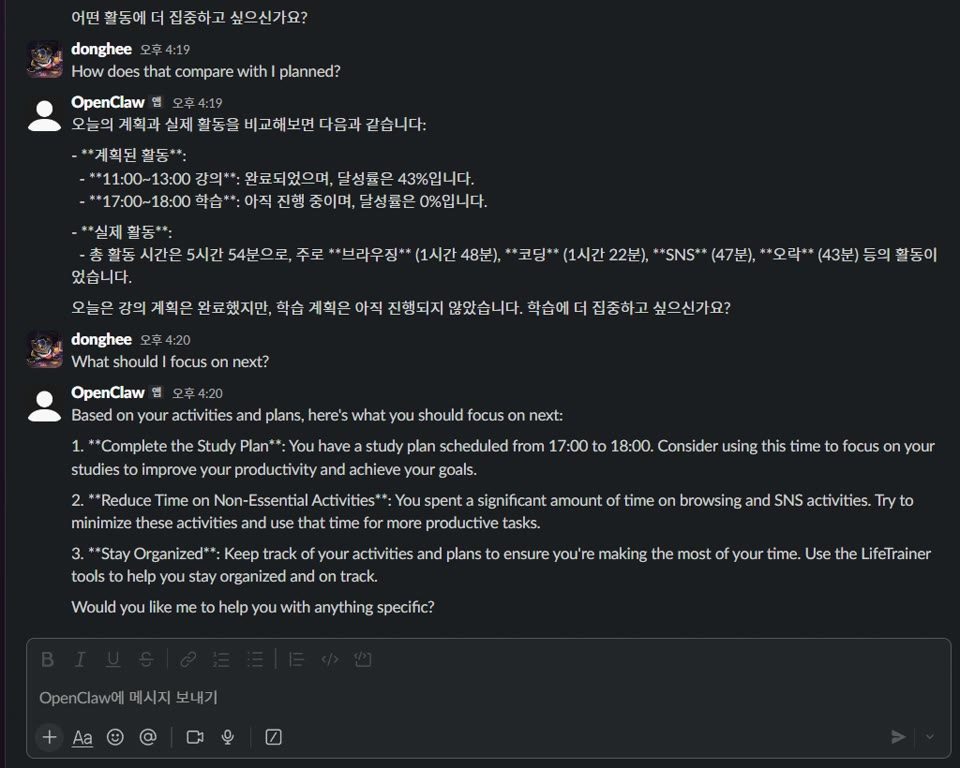

Arduino UNO Q 헬스 코치 로봇
NPU가 없는 Arduino UNO Q 한 대에서 운동 횟수 세기, PTZ 짐벌 추적, 모바일 웹앱을 컨테이너 하나와 프로세스 하나로 함께 돌렸습니다.
포즈 추론 약 11.4 FPS, CPU 사용률 약 83% (실기 측정)
로봇·엣지 AI 소프트웨어 · 한성대학교 AI응용학과 3학년
로봇과 엣지 디바이스에서 AI 모델을 실제로 돌리고, 측정하고, 고치는 일을 해 왔습니다.
danny20049090@gmail.com · GitHub · Hugging Face
마지막 업데이트 2026-11-18
NPU가 없는 Arduino UNO Q 한 대에서 운동 횟수 세기, PTZ 짐벌 추적, 모바일 웹앱을 컨테이너 하나와 프로세스 하나로 함께 돌렸습니다.
포즈 추론 약 11.4 FPS, CPU 사용률 약 83% (실기 측정)
"청소해줘"라고 입력하면 SO-101 양팔이 ACT 정책으로 책상 위 조각을 쓰레받기에 쓸어 담는 팀 데모입니다. 저는 Language 파트, LeRobot 연동 어댑터, 세 프로세스의 통합을 맡았습니다.
같은 명령에 동작이 달라지던 원인(ACT 액션 큐 잔여)을 찾아 고침 · 테스트 137개

Jetson Orin NX 16GB에서 모델 13개 구성을 직접 측정하고, 그 결과로 고른 Qwen3-8B 위에 내 활동 기록을 근거로 답하는 비서를 만들어 Slack에 연결했습니다.
도구 호출 시험 8B 6/6, 30B 4/6 · 운영 장애 기록 65건
| 2023.03 ~ | 학력 | 한성대학교 AI응용학과 (3학년 재학 중) |
| 2023.12 ~ 2025.06 | 병역 | 통신병 복무 |
| 2026.04 ~ 2026.08 | 산학협력 | PAI 양팔 로봇 (한성대 SW중심대학사업단) |
| 2026.07 ~ 2026.08 | 현장실습 | ㈜온에이아이로봇, 대화형 Physical AI 로봇 제어 개발 (328시간) |
| 2026.08 ~ 2026.09 | 대회 | 데이콘 나라장터 법령 위반 모니터링 AI, 1인 참가 Private 리더보드 3위 |
| 2026 | 대회 | SW중심대학 디지털 경진대회 AI부문, 5인 팀 19위 / 261팀 |
| 2026.09 ~ | 산학협력 | Mendii 신발 손상 검출 AI (AI온캠퍼스인턴십) |
| 2026.10 | 오픈소스 | whichllm PR #218 머지 |
코드 작성은 Claude Code 같은 AI 코딩 도구와 함께 합니다. 무엇을 잴지 정하고, 결과가 맞는지는 실기 측정과 테스트로 직접 확인합니다. 그래서 GitHub 커밋 다수에 Claude 공동작성 표기가 남아 있습니다.